Kit de prensa
FamilyBank
FamilyBank es el banco de la familia con dinero ficticio: una tarjeta para cada miembro, paga, ahorro, huchas y un programa de puntos con premios, para que los niños aprendan a gestionar su dinero.
- Desarrollador
- Jorge Sanz Borrell · GitoCorp Studios
- Plataformas
- iPhone y iPad
- Disponibilidad
- Próximamente en la App Store
- Lanzamiento
- Otoño de 2026
- Idioma
- Español
- Moneda
- El gito (GTO), ficticia y sin relación con ninguna moneda real
- Acceso
- Iniciar sesión con Apple; tarjeta NFC, Face ID o Touch ID
Textos listos para usar.
Descripción corta y larga, en español y en inglés. También van en el fichero de texto del ZIP.
Descripción corta
FamilyBank es el banco de la familia con dinero ficticio: una tarjeta para cada miembro, paga, ahorro, huchas y un programa de puntos con premios, para que los niños aprendan a gestionar su dinero.
Descripción
FamilyBank reproduce la experiencia de una app bancaria de verdad, pero con dinero ficticio y bajo el control de los adultos de la casa. La moneda de la app es el gito (GTO), ficticia y sin relación con ninguna moneda real. Cada miembro tiene su tarjeta virtual con su saldo en gitos y sus puntos, y los niños entran acercando su tarjeta NFC al iPhone o con Face ID o Touch ID.
Los adultos que dirigen el banco ingresan la paga, dan puntos explicando el motivo y ven todos los movimientos. Los niños retiran, transfieren a sus hermanos y ahorran: en un fondo de ahorro que no se puede tocar o en huchas para retos concretos, cada una con su icono y su color.
Cada familia crea su propio catálogo de premios, desde canjes inmediatos hasta metas a las que aporta toda la casa. Los avisos llegan al momento a los móviles de la familia, y los datos de cada familia se guardan en un espacio propio y separado. Sin dinero real y sin datos bancarios.
In English
Short description
FamilyBank is a family bank with pretend money: a card for every family member, allowance, savings, piggy banks and a points programme with rewards, so children learn to manage their money.
Description
FamilyBank recreates the feel of a real banking app, but with pretend money and with the parents in charge. The app's currency is the gito (GTO), a pretend currency unrelated to any real one. Every member has a virtual card showing their balance in gitos and their points, and children sign in by tapping their NFC card on the iPhone or with Face ID or Touch ID.
The adults who run the bank pay the allowance, award points with a reason and see every transaction. Children withdraw, transfer to their siblings and save: in a savings fund they cannot touch, or in piggy banks for specific goals, each with its own icon and colour.
Each family builds its own rewards catalogue, from instant treats to bigger goals the whole household contributes to. Notifications reach the family's phones instantly, and each family's data lives in its own separate space. No real money and no bank details.
Lo más destacado
Una tarjeta para cada miembro
Saldo y puntos de un vistazo, con acceso por tarjeta NFC, Face ID o Touch ID y una tarjeta que cada uno puede personalizar.
Los adultos al mando
Roles de director y cliente: los directores ingresan la paga, dan puntos y ven todos los movimientos para trasladarlos al mundo real.
Ahorrar tiene premio
Fondo de ahorro intocable, huchas para retos y un programa de puntos con premios flash y acumulativos creados por cada familia.
Imágenes de prensa.
Composiciones para artículos y redes, hechas con capturas reales. Pulsa una para descargarla a tamaño completo.
Capturas.
Capturas reales de la app, sin retocar, a resolución nativa del iPhone 17 Pro Max y del iPad Pro de 13 pulgadas.
iPhone
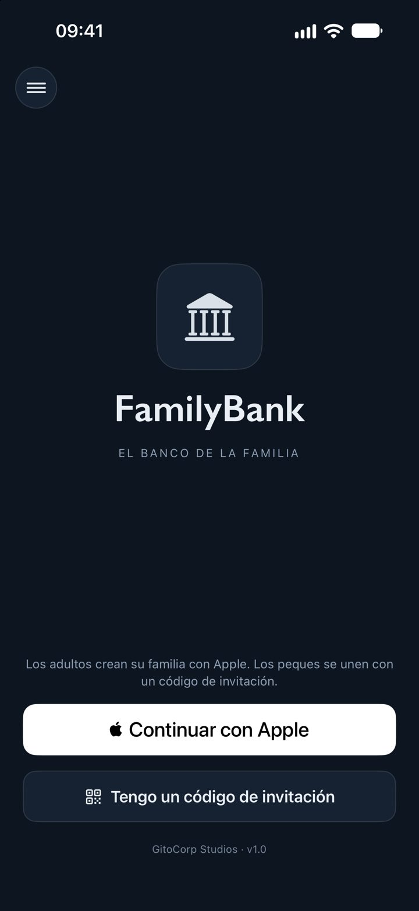
PNG · 1320 × 2868 · 175 KB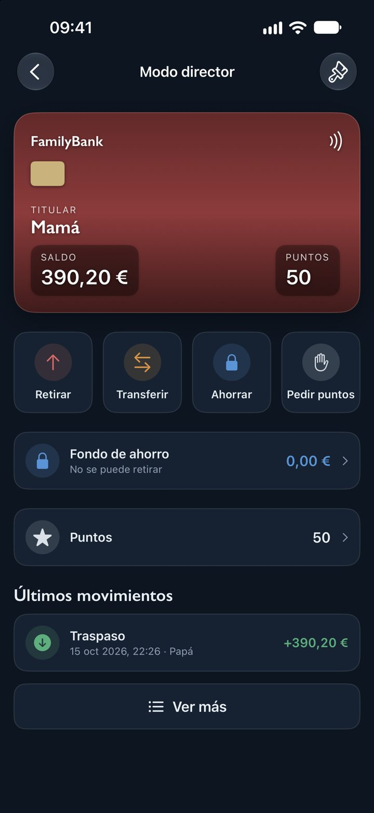
PNG · 1320 × 2868 · 517 KB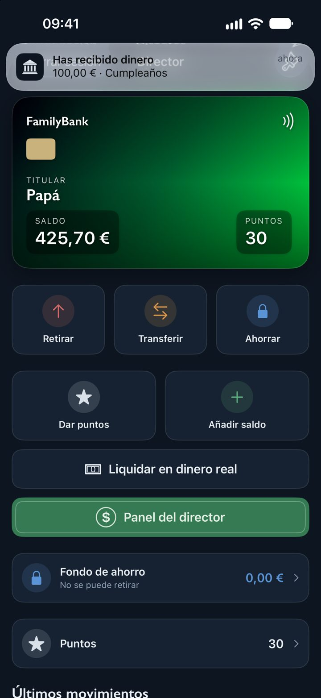
PNG · 1320 × 2868 · 1,1 MB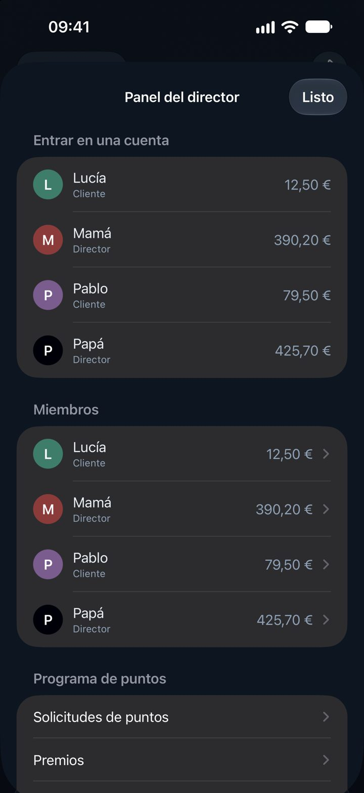
PNG · 1320 × 2868 · 405 KB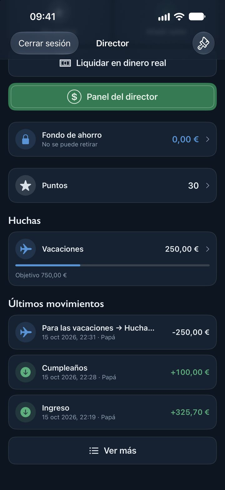
PNG · 1320 × 2868 · 730 KB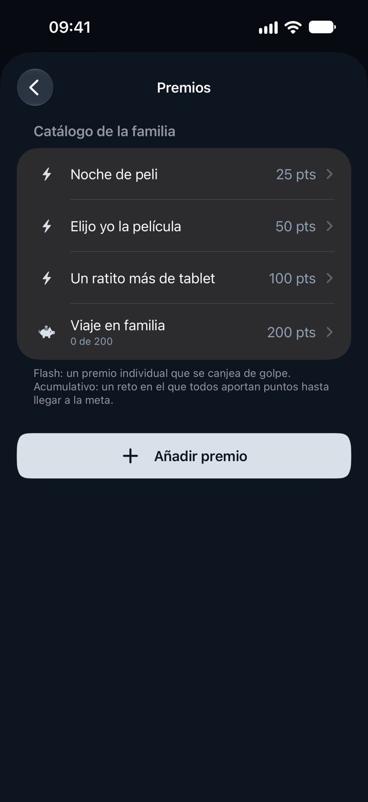
PNG · 1320 × 2868 · 206 KB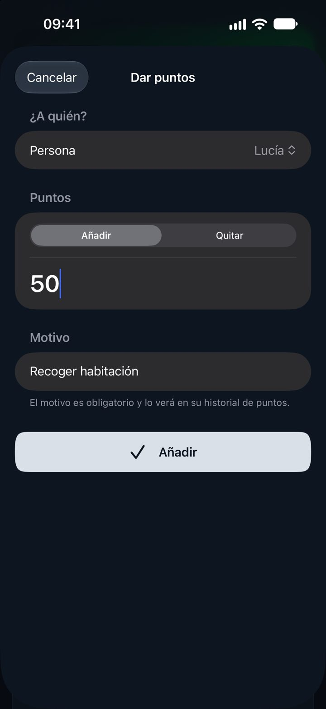
PNG · 1320 × 2868 · 377 KB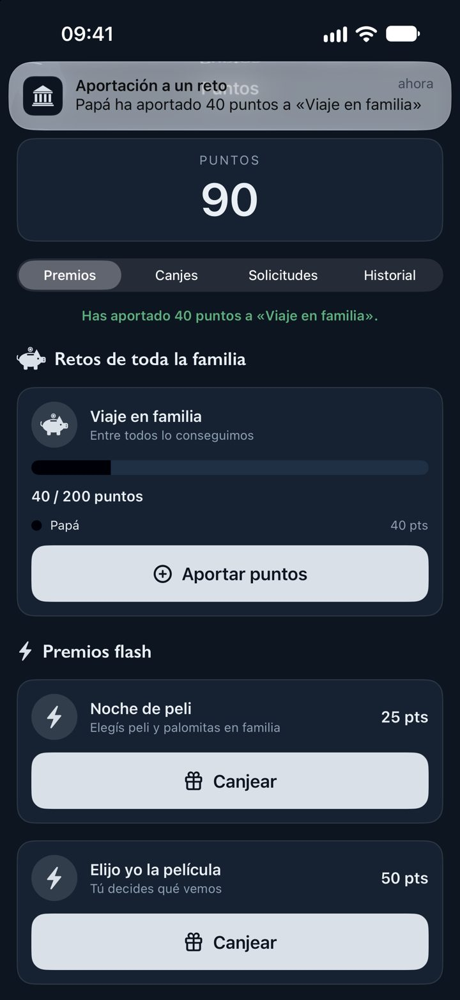
PNG · 1320 × 2868 · 360 KBiPad
En la App Store.
Las imágenes que acompañan a la app en su página de la App Store.
iPhone
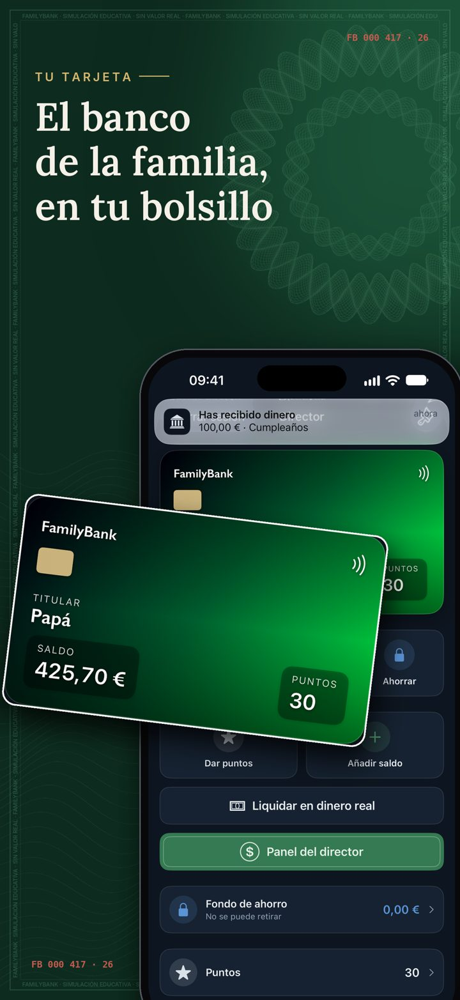
PNG · 1206 × 2622 · 1,5 MB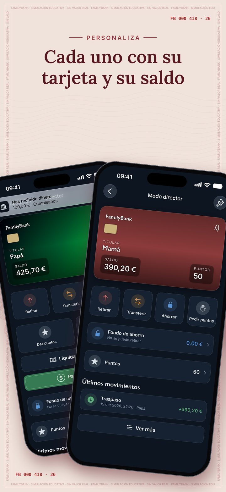
PNG · 1206 × 2622 · 1,3 MB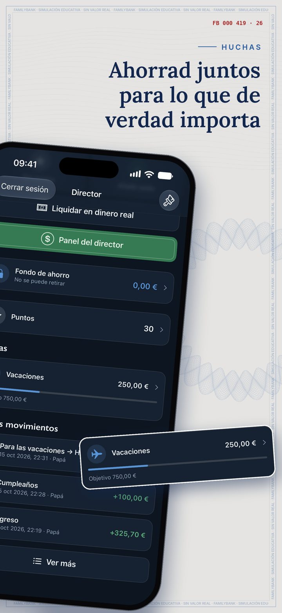
PNG · 1206 × 2622 · 1,2 MB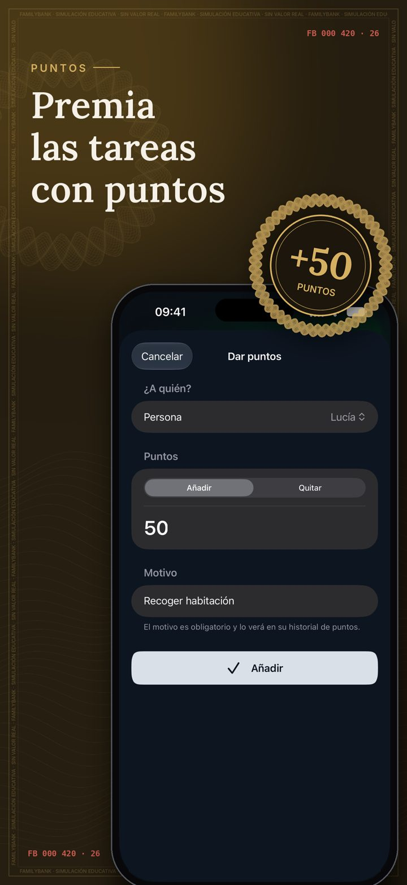
PNG · 1206 × 2622 · 857 KB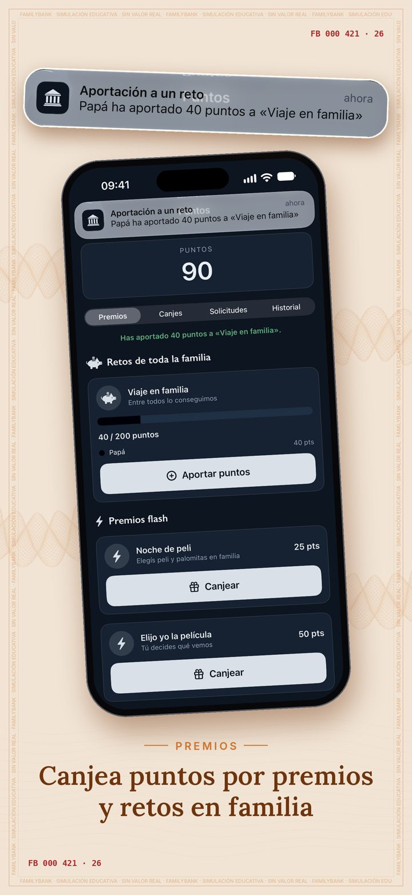
PNG · 1206 × 2622 · 1,2 MB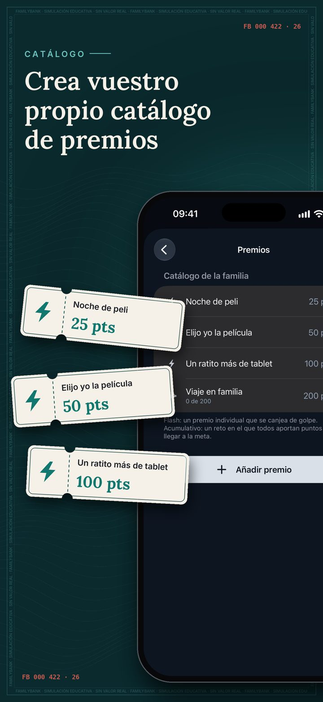
PNG · 1206 × 2622 · 820 KB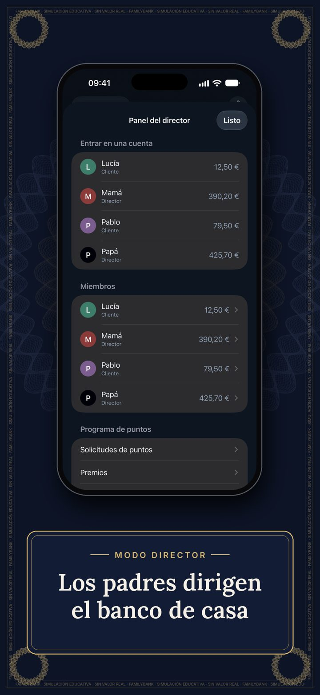
PNG · 1206 × 2622 · 1,0 MB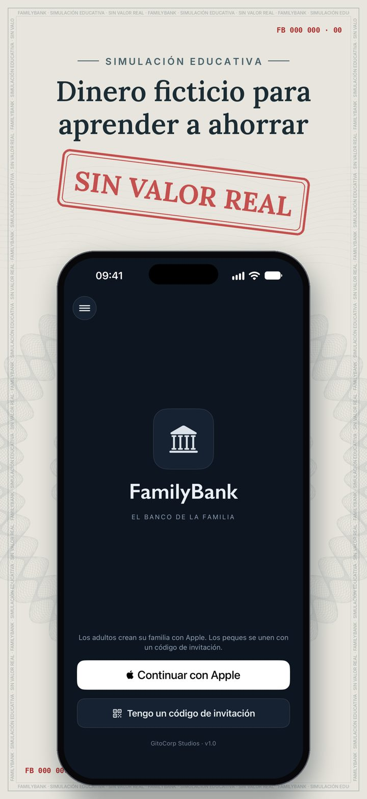
PNG · 1206 × 2622 · 959 KBiPad
Icono y logotipo.
Úsalos tal cual: sin recortar, deformar ni cambiar sus colores.


Contacto de prensa
Para entrevistas, más material o cualquier consulta sobre FamilyBank, escribe a GitoCorp Studios.